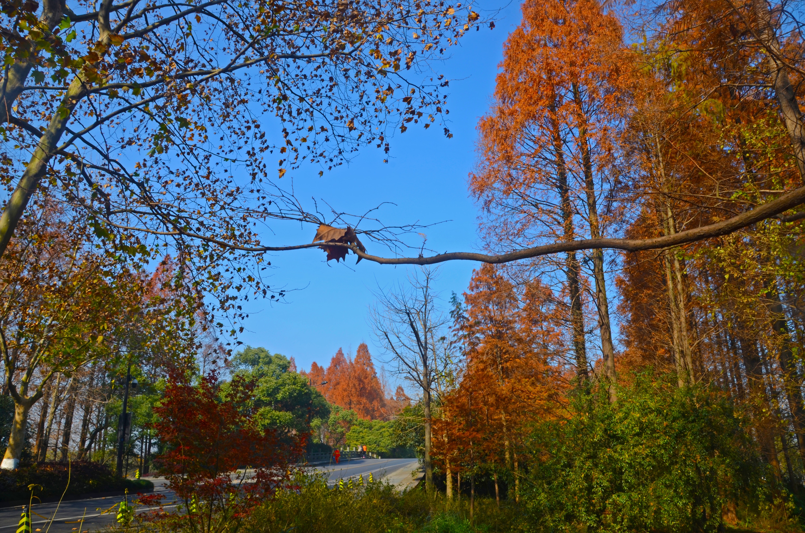
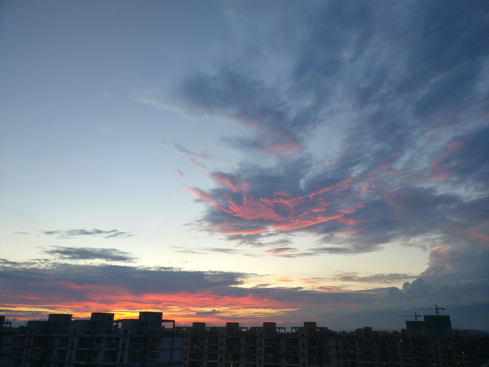
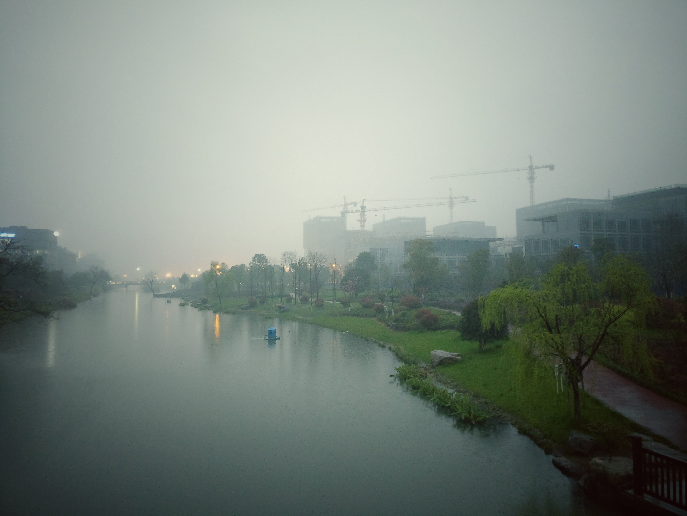
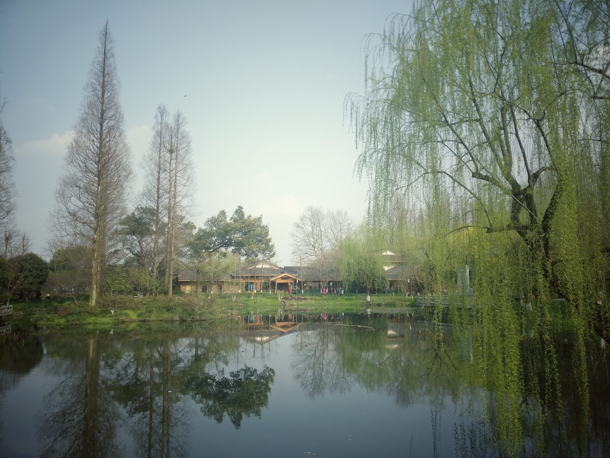
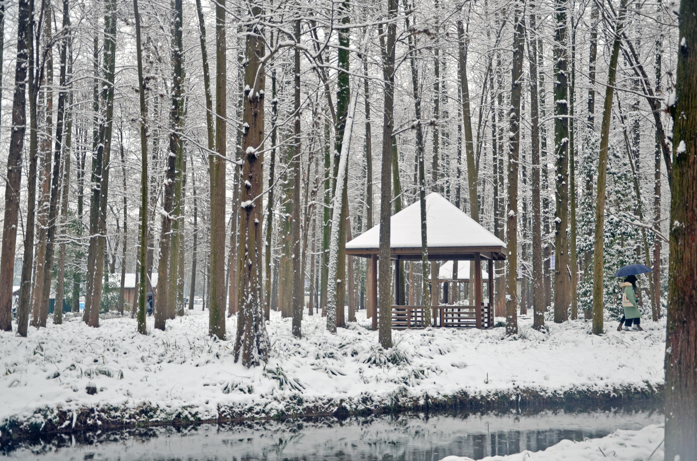

杭州-春夏秋冬
春之昼，秋之夕，夏之荷，冬之雪。一年一轮回，一月一变换。杭州的美，也就藏在这四季变换之中。
杭州的秋天很短，短到稍不注意就进入了冬季。在柳浪闻莺可以绿与黄的渐变色。

而在杨公堤附近则藏着杭州整个深秋

第一次被西湖的景色惊艳到，来不及看平湖秋月，秋天就已经飘飘然走了。
相对于秋天的短暂，夏天可就漫长许多。火一般的太阳在脸上，没事少出门。
江南采莲，荷叶田田。


夏天的天空，极富表现力。
春天是个多雨的季节，也因此有烟雨江南。




流传着：晴西湖，不如雨西湖；雨西湖，不如雾西湖；雾西湖，不如雪西湖。
当时怀揣着看断桥残雪，跑到杭州。可是杭州的冬天并不是每年都会下雪，看断桥，看断桥残雪可就不容易了。



断桥残雪呢，并没有看见，或许本来就看不见。
春夏秋冬，一年又一年的轮回着，这就是我眼中的杭州的四季。（搭配着张国荣的春夏秋冬，岂不是更漂亮）